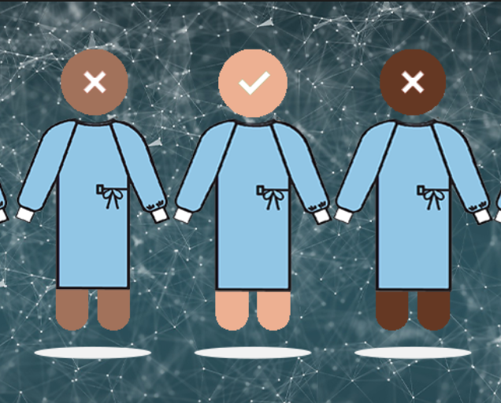
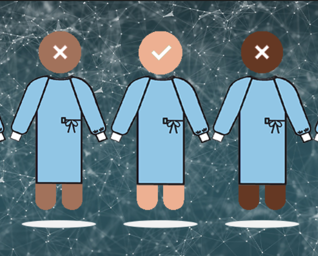

Addictive Design:
Every software developer dreams of creating an application that
everyone adores, whether it be an app, website or extension. But
these software practices involve more than just appeal, but they
too involve incorporating unethical elements that often lead to
the development of addictive behaviors.
For instance, Instagram employs mechanisms like endless scrolling,
frequent notifications, and a personalized feed that keeps the user
engaged for unhealthy periods of time. These features that enhance
user experience also lead to compulsive usage, which often makes it
difficult to disengage.
Software developers should engage in decision-making where they
should consider the long term impacts of their designs, where a balance
between healthy user engagement and ethica responsibility should be
attained to ensure they doesn't exploit user vulnerabilities.
Algorithmic Bias:
Algorithmic bias is another, more newly emerged concern in software
development, particularly with the recent emergence of machine
learning applications like ChatGPT and Google’s Bard. The applications
have been under criticism for being trained on non-diverse, discriminatory
and limited data sets.
In 2018, Amazon utilized an AI recruitment tool to scan resumes. The
system tool showed a prejudice against women, as the AI was trained on
resumes over a decade old which were predominantly from men, which
reflected the male dominance in the tech industry.
Ethical coding practices should begin with using diverse and inclusive data
sets, conduct regular bias checks through testing, and employ potential bias
detection algorithms in their code.
Data Protection:
vData protection refers to a software developers responsibility of
safeguarding their users personal information against unauthorized
access, through either malware or unwarranted distribution.
MOVEit had a data breach recently this year, that affected 200
organizations and 17.5m of its< users, including federal governments.
This breach originated from a vulnerability in the websites code,
which allowed hackers to not only access, but also distribute the
users of MOVEit’s personal information.
While the software developer may not be entirely at fault in these
situations, it is their duty to anticipate vulnerabilities in their
code, and implement strong security measures to protect their users
and their applications integrity against such breaches.